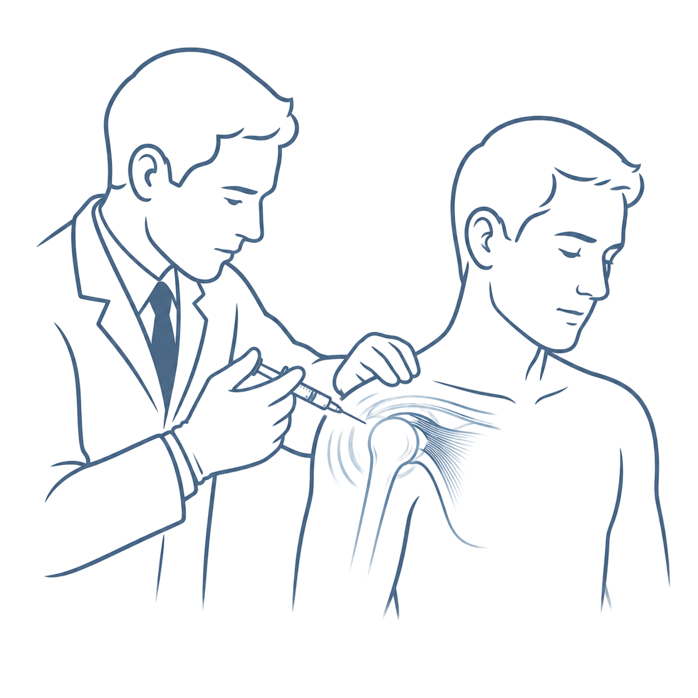
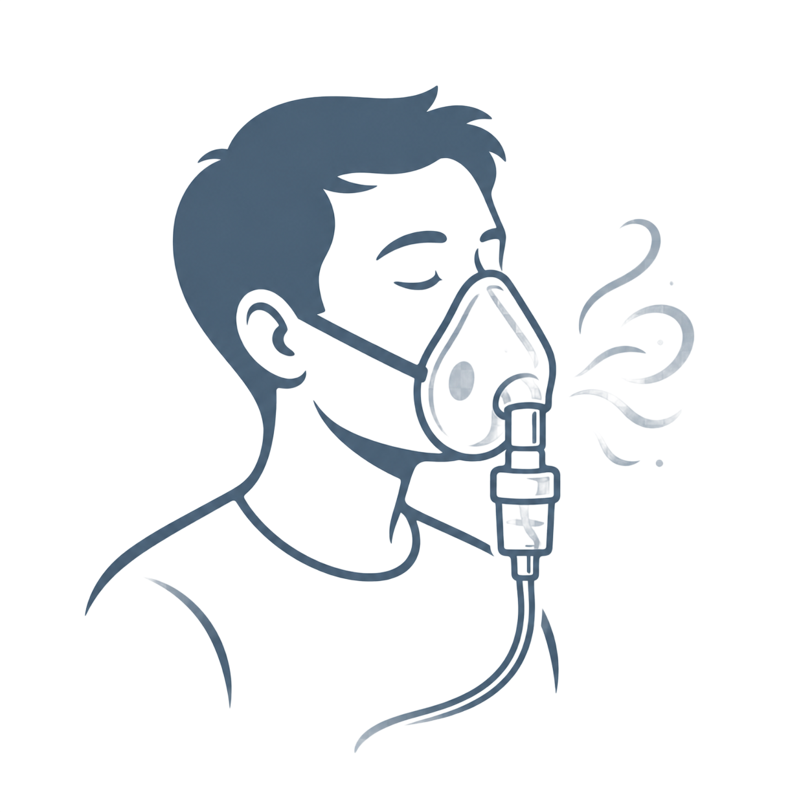
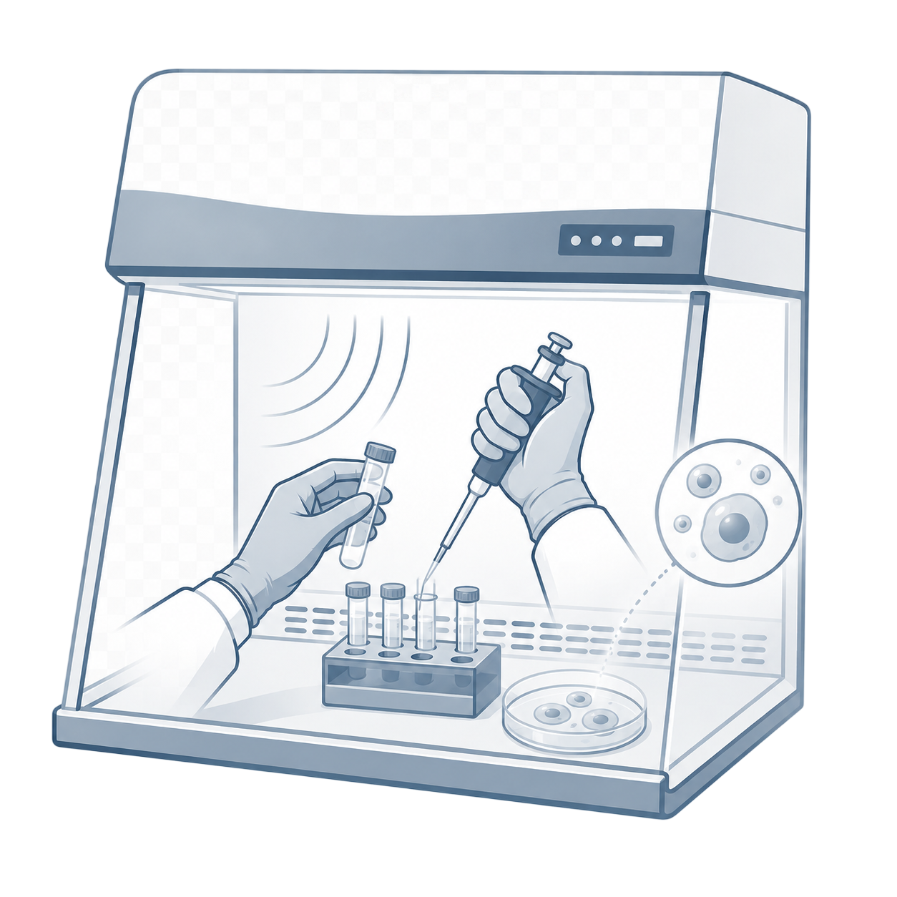
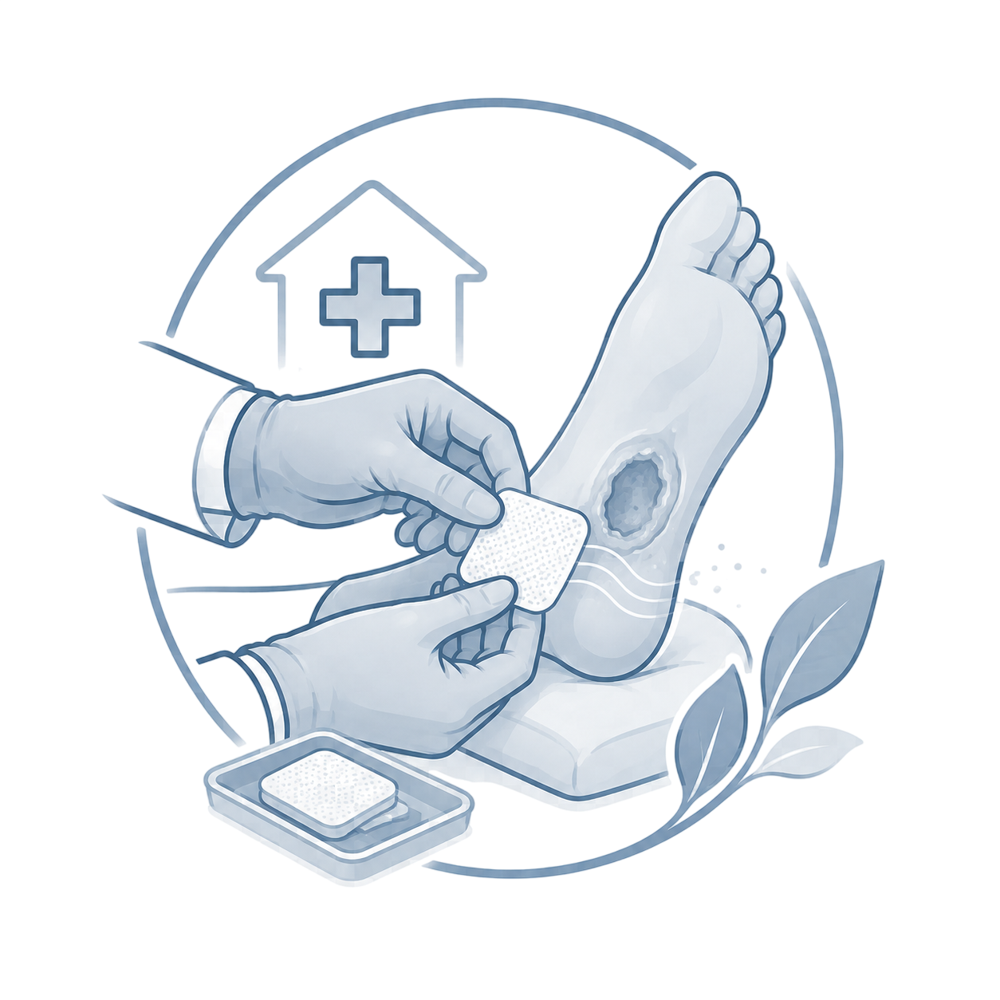
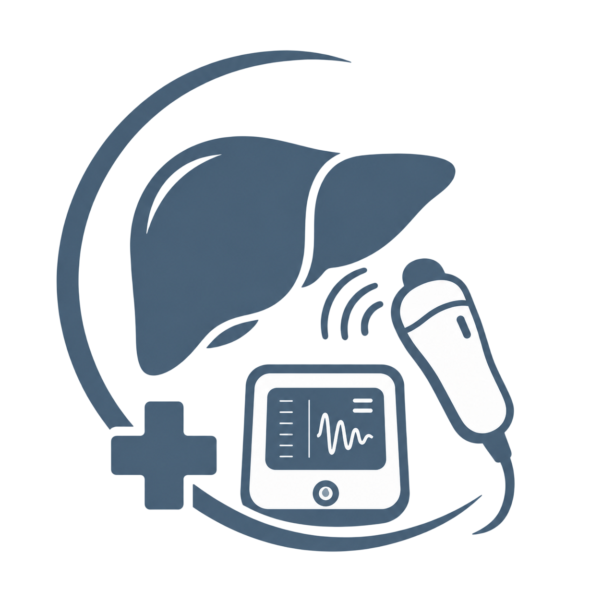

• Cáncer de mama, cáncer de hígado, etc.
• Cáncer de mama, cáncer de hígado, etc. • Esclerosis Lateral Amiotrófica (ELA)
• Esclerosis Lateral Amiotrófica (ELA)
Terapia Celular y Medicina Regenerativa
Aplicación avanzada de células madre adultas y factores ortobiológicos diseñados para reparar tejidos dañados, modular el sistema inmune y detener la progresión de enfermedades crónicas y degenerativas.
🦴 Artrosis y Desgaste Articular
Tratamientos para el dolor de hombro (Síndrome del Manguito Rotador, Capsulitis Adhesiva) y artrosis severa en rodilla y cadera sin cirugía.
🍺 Regeneración Hepática
Protocolos especializados para detener la progresión de cirrosis hepática (estadios Child A, B y C) y revertir la fibrosis de tejido.
🩺 Enfermedades Renales y Crónicas
Terapias con inductores, liberadores y movilizadores de células madre para nefropatías crónicas y soporte metabólico integral.
Nebulización Regenerativa
Tratamiento innovador de medicina regenerativa inhalada. Permite la administración directa de compuestos biológicos y factores inductores en el sistema respiratorio para acelerar la curación de tejidos y desinflamar el árbol bronquial.
🫁 Asma Bronquial
Nebulización de terapia alternativa orientada a modular la respuesta inmune y reducir la hiperreactividad de la vía aérea en pacientes asmáticos.
👵 Bronquitis Crónica
Eficaz para pacientes adultos mayores con bronquitis crónica que no muestran respuesta a inhaladores convencionales.
Curación de Heridas y Cuidados a Domicilio
Especialistas en la curación avanzada de heridas de difícil resolución y cuidados de enfermería a domicilio, bajo supervisión y autorización médica constante.
🦶 Pie Diabético
Curación y desbridamiento de úlceras de pie diabético con aplicación de parches y apósitos biológicos regenerativos.
🛏️ Escaras y Úlceras de Presión
Atención especializada a pacientes postrados para el cierre acelerado de escaras y prevención de infecciones.
🦵 Úlceras Varicosas
Tratamiento de úlceras de origen venoso y vascular para lograr el cierre definitivo de heridas en tiempo récord.
Diagnóstico Hepático No Invasivo
Utilizamos tecnología de elastografía de última generación para evaluar la salud de tu hígado sin necesidad de biopsias dolorosas ni agujas.
🔍 Tecnología FibroScan
Cuantificación inmediata del nivel de grasa en el hígado e indicación del grado exacto de fibrosis y rigidez hepática.
Galería de Procedimientos Reales

Infiltración Articular
Infiltración ecoguiada de células madre y factores de crecimiento en hombro para Capsulitis Adhesiva y Manguito Rotador.

Nebulización Regenerativa
Sesión clínica de nebulización biológica inhalada para asma e hiperreactividad bronquial.

Procesamiento Biológico
Preparación de inductores y liberadores celulares en laboratorio de campana de flujo laminar on-site.

Curación de Úlceras
Cuidados y curación avanzada a domicilio de úlcera por pie diabético bajo supervisión médica.

Elastografía Hepática
Medición directa e inmediata de la salud del hígado mediante el equipo no invasivo FibroScan.